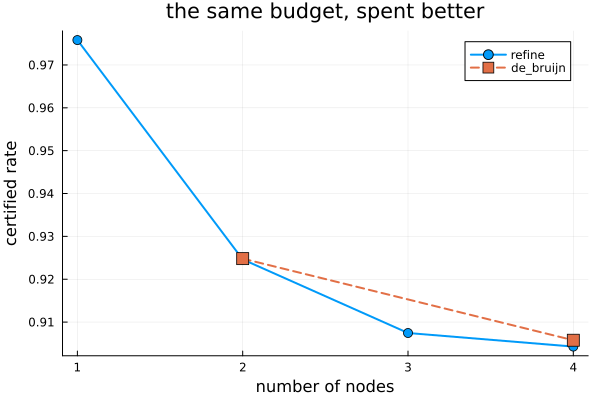

Refinement: letting the graph design itself
Every other example hands certify a graph you chose. This one does not: refine starts from the common Lyapunov function graph and grows it, reading off which edge inequalities the solver is held at and splitting the node that is asked to do too much ((Ninite and Jungers, 2026)). The result beats a De Bruijn graph of the same size.
import PathCompleteCertificates as PCC
import Clarabel
using Plots
const OPTIMIZER = Clarabel.Optimizer
const TEMPLATE = PCC.QuadraticTemplate()PathCompleteCertificates.QuadraticTemplate{Float64}(Inf)A rotation and a shear. No single quadratic function attains the joint spectral radius of this pair, so the one-node bound is loose and there is something to win.
A = [0.69 * [0.0 1.0; -1.0 0.0], 0.69 * [1.0 1.0; 0.0 1.0]]
problem = PCC.StabilityProblem(PCC.switched_system(A))PathCompleteCertificates.StabilityProblem{HybridSystems.HybridSystem{HybridSystems.OneStateAutomaton, MathematicalSystems.ContinuousIdentitySystem, MathematicalSystems.LinearMap{Float64, Matrix{Float64}}, HybridSystems.AutonomousSwitching, Vector{MathematicalSystems.ContinuousIdentitySystem}, Vector{MathematicalSystems.LinearMap{Float64, Matrix{Float64}}}, FillArrays.Fill{HybridSystems.AutonomousSwitching, 1, Tuple{Base.OneTo{Int64}}}}}(Hybrid System with automaton HybridSystems.OneStateAutomaton(2))Running the loop
Each step solves jsr_bound, reads the tight edges, and applies a refinement; the default strategy splits the node held at the most tight outgoing edges. The run is deterministic: ties go to the cheapest split.
trace = PCC.refine(TEMPLATE, problem; optimizer = OPTIMIZER, depth_max = 4)
sizes = PCC.n_nodes.(PCC.graphs(trace))
bounds = PCC.rates(trace)
collect(zip(sizes, round.(bounds; digits = 5)))4-element Vector{Tuple{Int64, Float64}}:
(1, 0.97581)
(2, 0.92462)
(3, 0.90745)
(4, 0.90428)Why it stopped is part of the answer, a RefinementStatus. Here the budget ran out with the bound still falling.
PCC.status(trace)DEPTH_REACHED::RefinementStatus = 3How far from the truth?
The certified rate is an upper bound on the joint spectral radius. Every cycle of the tight subgraph gives a lower one, since a periodic product cannot contract faster than the worst switching sequence, so the two bracket the answer (jsr_lower_bound).
lower = PCC.jsr_lower_bound.(PCC.certificates(trace))
collect(zip(sizes, round.(lower; digits = 5), round.(bounds; digits = 5)))4-element Vector{Tuple{Int64, Float64, Float64}}:
(1, 0.0, 0.97581)
(2, 0.69, 0.92462)
(3, 0.69, 0.90745)
(4, 0.0, 0.90428)The bracket is what lets the loop stop with OPTIMAL rather than merely out of ideas, and it covers a case the structural test of is_jsr_exact cannot. Two opposite rotations of the same magnitude have a joint spectral radius their one-node quadratic certificate already attains, but every edge is then tight, so no node has a single tight outgoing edge; the bracket closes at the first step instead.
turn(angle) = 0.9 .* [cos(angle) -sin(angle); sin(angle) cos(angle)]
rotations = PCC.StabilityProblem(PCC.switched_system([turn(pi / 3), turn(-pi / 3)]))
exact = PCC.refine(TEMPLATE, PCC.de_bruijn(1, 2), rotations; optimizer = OPTIMIZER)
PCC.status(exact), round(PCC.rates(exact)[end]; digits = 6)(PathCompleteCertificates.OPTIMAL, 0.9)Against De Bruijn
The honest comparison is at equal size: a graph with n nodes carries n quadratic functions either way, so node count is the budget.
de_bruijn = map([1, 2]) do order
graph = PCC.de_bruijn(order, 2)
certificate = PCC.jsr_bound(TEMPLATE, graph, problem; optimizer = OPTIMIZER)
return PCC.n_nodes(graph), certificate.rate
end
plot(
sizes,
bounds;
marker = :circle,
markersize = 5,
lw = 2,
label = "refine",
xlabel = "number of nodes",
ylabel = "certified rate",
xticks = sizes,
legend = :topright,
title = "the same budget, spent better",
)
plot!(
first.(de_bruijn),
last.(de_bruijn);
marker = :square,
markersize = 6,
lw = 2,
ls = :dash,
label = "de_bruijn",
)
At two nodes the bounds coincide: the split of the one-node graph is the dual of de_bruijn(1, 2), and on this system the two certify the same rate. At four nodes they part. De Bruijn spends its nodes on remembering the last two modes whether or not that is where the certificate was tight; refinement spends them where the solver said it hurt.
Soundness
Every graph the loop visits is path-complete, which is checkable rather than asserted, and it is the whole soundness argument: a refinement is a map on graphs preserving path-completeness, and being no worse needs nothing from the template either, since each copy inherits the split node's function.
all(graph -> PCC.is_path_complete(graph, 1:length(A)), PCC.graphs(trace))trueThis page was generated using Literate.jl.